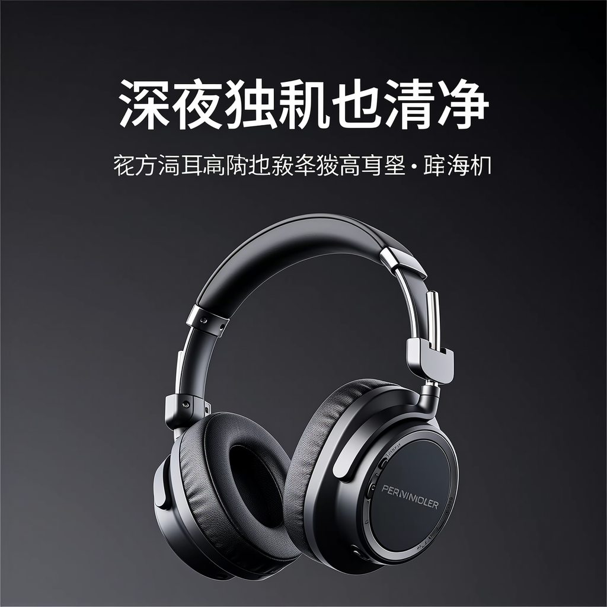
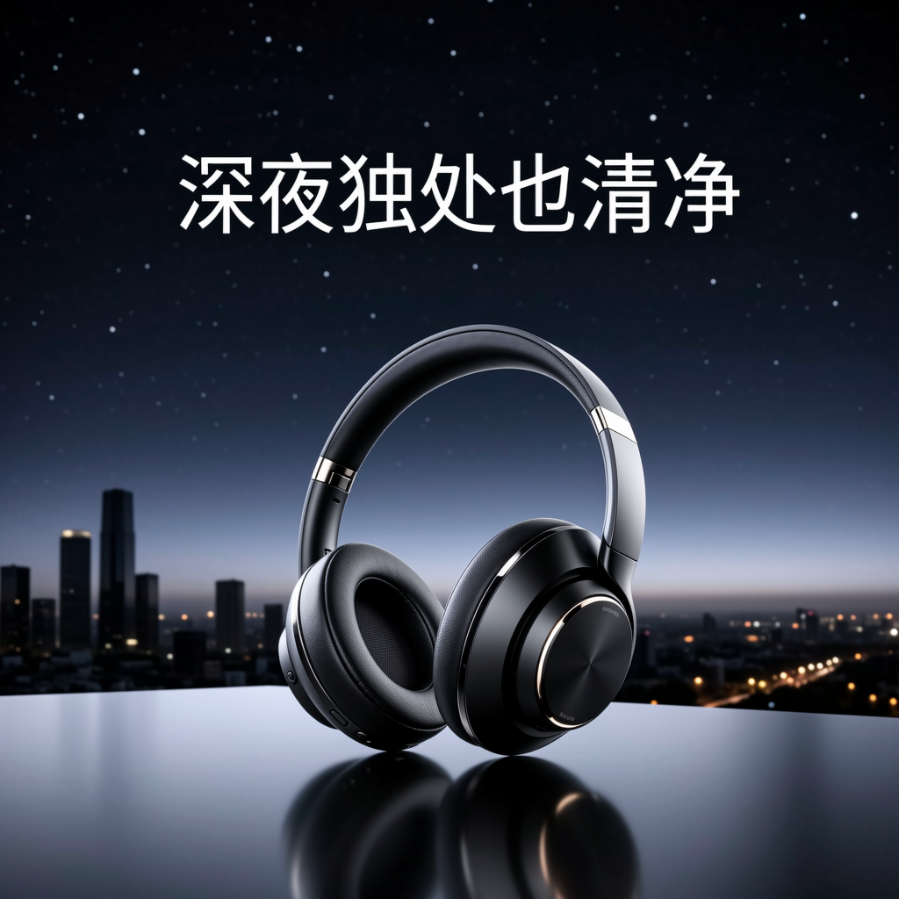

原始提示词

查看实际提示词
帮我做一张新款降噪耳机的产品海报，主打“深夜独处也清净”这句文案，风格简约高级

帮我做一张新款降噪耳机的产品海报，主打“深夜独处也清净”这句文案，风格简约高级

高端降噪耳机产品海报，简约高级风格，主体：一款现代头戴式降噪耳机，置于画面中央偏右，深色哑光质感，金属细节，柔和轮廓光勾勒边缘，深蓝近黑的渐变背景，微弱星光与城市夜景虚化作底，静谧深夜氛围，大面留白，极简主义构图，视觉焦点集中于耳机，光影层次细腻，电影级布光，侧面45度微俯视角，中长焦镜头，浅景深，高级产品摄影质感，画面中清晰居中排列中文文案“深夜独处也清净”，字体纤细优雅，无衬线或现代宋体，文字与耳机保持平衡留白
帮我画一个AGI实现以后程序员的工作场景
cinematic wide shot, future software office after AGI is achieved, diverse programmers working with a glowing holographic AGI assistant, floating translucent screens with code and architecture diagrams, relaxed supervising and discussing, coffee cups, ergonomic desks, glass walls, city skyline at dusk, soft blue and amber lighting, volumetric light, depth of field, 35mm lens, ultra detailed, photorealistic sci-fi concept art